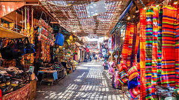

Intro
For Thanksgiving break, instead of going home, I am visiting Morocco for the first time with my family! I am not very knowledgeable about this country, so I would love to learn more before I go. Here I am going to test AI as a travel guide in Morocco using ChatGPT 5.1!

PROMPT: I am going to Morocco for the first time. What are some things about the country that I should know?
🇲🇦 1. Culture & Etiquette Morocco is Muslim-majority; dress modestly in rural areas. Greetings like “Salam” or “Bonjour” are appreciated. Public affection is uncommon; Fridays are the holy day.
💬 2. Languages Arabic and Amazigh are official; French is widely spoken. English is common in tourist areas. Useful phrases: Shukran (thank you), Salam (hello), La shukran (no thank you).
💸 3. Money Currency: Moroccan Dirham (MAD). Cash is important in markets and taxis. ATMs are available; cards work in nicer places.
🧳 4. Safety Morocco is generally safe for tourists. Be cautious of petty scams and unsolicited “guides.” Keep belongings secure in crowded areas.
🕌 5. Religion & Daily Life Expect the call to prayer five times a day. During Ramadan, schedules shift and some restaurants close midday.
🧼 6. Food & Water Try tagine, couscous, pastilla, and mint tea. Drink bottled water, not tap. Choose street food with high turnover.
🚕 7. Transportation Petite taxis are cheap—ask for the meter. Grand taxis are shared for longer distances. Medinas like Marrakech are walk-heavy.
🛍️ 8. Souk & Bargaining Tips Bargaining is expected; start at half the asking price. Be polite and patient when negotiating. Mint tea is hospitality, not a purchase obligation.
⚠️ 9. Photography Etiquette Ask before photographing people. Some rural areas prefer no photos.
☀️ 10. Climate Summers are very hot inland. Coastal cities are cooler. Desert nights get cold.
If you tell me which cities you’re visiting, I can tailor recommendations!
PROMPT: I am visiting Marrakech, Fes, then Chefchaouen.
Here are tips specifically for Marrakech, Fes, and Chefchaouen:
🇲🇦 General These three cities each feel completely different, so expect big contrasts. Keep small cash for taxis, markets, and tips. Medinas are maze-like—don’t rely only on Google Maps.
🔥 Marrakech (Red City) The medina is intense, loud, colorful, and busy—normal and part of the experience. Jemaa el-Fnaa square at night is chaotic but fun; watch for pickpockets. Visit Bahia Palace, Jardin Majorelle, and the Saadian Tombs. Taxis may try to overcharge—ask for the meter or agree on a price first. Stay near the medina walls if you want easier navigation.
🧿 Fes (Fes el-Bali) Fes has the oldest, most traditional medina in Morocco—expect narrow alleys. Hiring an official guide for half a day helps avoid getting lost or scammed. The Chouara Tannery is a must-see—the leather shops will give mint leaves to help with the smell. Shops are more traditional and less touristy than Marrakech. Avoid following anyone who says “this street is closed”—that’s a common line.
💙 Chefchaouen (Blue City) Much calmer than Marrakech and Fes—perfect for a relaxing end. Wander the blue streets early morning for the best photos and fewer crowds. Locals are friendly and more chill with tourists. The Spanish Mosque offers the best sunset spot. Food is slower-paced here—be patient and enjoy the vibe.
🚗 Travel Between Cities Train: Marrakech → Fes is easiest by ONCF train (fast and comfortable). Bus/Taxi: Fes → Chefchaouen usually requires a bus like CTM or a private transfer. Book transportation ahead during busy seasons.
🍽️ Food Tips Try tagine in Marrakech, traditional Fassi cuisine in Fes, and fresh local goat cheese in Chefchaouen. Drink bottled water everywhere. Tipping 5–10% is normal.
🧭 Navigation & Safety Medinas are safe but confusing—ignore unsolicited “guides.” If you get lost, ask a shopkeeper or a family, not random young guys. Dress modestly in Fes more than Marrakech; Chefchaouen is relaxed.
If you want, I can also give a day-by-day suggested itinerary or food recommendations for each city.
PROMPT: What are some things that I must do/eat/buy/try before I leave?
Here are the must-dos, must-eats, and must-buys for Marrakech, Fes, and Chefchaouen:
🌟 MUST-DO EXPERIENCES Wander the Marrakech medina and Jemaa el-Fnaa at sunset. Visit Jardin Majorelle & the Yves Saint Laurent Museum. Explore Bahia Palace and the Saadian Tombs. Do a traditional Moroccan hammam (spa bath + scrub). Watch craftsmen in Fes: metalworkers, potters, leather makers. Visit the Chouara Tannery in Fes. Get lost (safely) in the blue alleys of Chefchaouen. Hike or walk to the Spanish Mosque in Chefchaouen for sunset. If time allows, do a half-day desert/quad/camel experience near Marrakech.
🍽️ MUST-EAT FOODS Chicken or lamb tagine (Marrakech has the best variety). Moroccan couscous (especially on Fridays). Pastilla (sweet-savory meat pie—Fes specialty). Fresh orange juice in Marrakech. Harira soup (especially in Fes). Zaalouk (eggplant dip) and taktouka (pepper dip). Bissara (fava bean soup—great breakfast in Fes). Street sfenj donuts with honey. Moroccan mint tea everywhere. Chefchaouen goat cheese—a local specialty.
🛍️ MUST-BUY ITEMS Hand-painted ceramics from Fes. Authentic leather goods (bags, belts, poufs)—Fes is the best place. Argan oil and natural skincare (buy from reputable shops, not street stands). Rugs (Beni Ourain, Azilal—bargain heavily). Spices (ras el hanout, saffron, cumin). Brass or copper lanterns and tea sets from the Marrakech souks. Babouches (traditional leather slippers). Blue-themed souvenirs from Chefchaouen (tiles, keychains, art). Dates, almonds, and Moroccan pastries to take home.
🎁 UNIQUE “ONLY IN MOROCCO” EXPERIENCES Drink mint tea on a rooftop terrace in Marrakech or Fes. Try an authentic Moroccan breakfast (bread, jams, cheese, olives, eggs). Watch a traditional gnawa music performance. Take photos at sunrise in Chefchaouen before tourists arrive. See the stars from a dark sky village or mountain viewpoint.
If you want, I can also list the best places in each city to try these foods or buy these items!
PROMPT: Yes please suggest specifics for Fes and Chefchaouen
Here are specific, reliable, classic places in Fes and Chefchaouen that first-time visitors love — these are long->standing spots, not trendy places that might change month to month.
——————————————————— 🇲🇦 FES — SPECIFIC PLACES TO EAT, BUY, AND DO ———————————————————
🍽️ Where to Eat in Fes The Ruined Garden — Beautiful courtyard restaurant; great lamb, vegetarian dishes, pastilla. Cafe Clock (Fes) — Famous for camel burger; great vibe, rooftop, cultural events. Dar Roumana — A bit nicer; Mediterranean–Moroccan fusion, amazing service. Berrada Family Restaurant — Small, local, authentic; great harira and tagines. Nagham Café (near Bab Boujloud) — Affordable, rooftop with views; good couscous and mint tea.
🛍️ What to Buy in Fes + Where Leather (BEST city in Morocco for leather) Buy near Chouara Tannery — many shops let you watch the process from their terrace. Look for: belts, bags, jackets, poufs.
Ceramics & Pottery Go to Art Naji — the most reputable pottery cooperative; hand-painted, beautiful blue Fassi style.
Metalwork & Brass Lamps Souk Seffarine (Place Seffarine) — metalworkers hammering pots, trays, lamps in real time.
Scarves, fabrics, caftans Look around Talaa Kebira and Talaa Seghira — main boulevards inside the medina.
⭐ Experiences You Must Do in Fes Visit Chouara Tannery (go early morning for best light). Climb to a tannery terrace for photos — just be prepared for strong smells (shops give mint). Explore Bou Inania Madrasa — gorgeous architecture, peaceful. See the Al-Attarine Madrasa — intricate mosaics. Stop at Bab Boujloud (Blue Gate) — great photo and food area. Visit an official cooperative for pottery or weaving (less pressure than souks). Get a traditional hammam at Hammam Mernissi or Hammam Moulay Idriss for a local experience.
——————————————————— 💙 CHEFCHAOUEN — SPECIFIC PLACES TO EAT, BUY, AND DO ———————————————————
🍽️ Where to Eat in Chefchaouen Casa Aladdin — Rooftop with the best view in town; classic Moroccan dishes. Bab Ssour — Local favorite for cheap, delicious food (try the harira + tagine). Restaurant Tissemlal (Casa Hassan) — Home-style cooking, cozy interior, great lamb tagine. Hamsa — Healthier/vegetarian options; peaceful atmosphere. Cafe Clock (Chefchaouen) — Relaxed, artistic vibe; good for lunch and tea.
🛍️ What to Buy in Chefchaouen + Where Blue Art & Photography Prints — Shops around the Outa El Hammam Square. Small ceramics with blue motifs — Many family-owned shops near the main square. Wool blankets and scarves — Chefchaouen is known for soft wool products; look near the small weaving shops. Local goat cheese — You can buy some from Fromagerie Talassemtane or small markets.
⭐ Experiences You Must Do in Chefchaouen Explore the narrow blue-painted alleys early morning (best photos). Visit the Kasbah Museum (quiet, lovely gardens). Walk to the Spanish Mosque for sunset — MUST DO. Hike a bit into Akchour Waterfalls (if you have ½–1 full day free). Sip mint tea on a rooftop in the medina (Casa Aladdin or Hamsa are perfect). Wander slowly — Chefchaouen is meant to be enjoyed, not rushed.
If you want, I can make a personalized schedule like:
Day 1 in Fes — what to do, where to eat, where to shop Day 2 in Fes — half-day walking plan Perfect 1-day plan for Chefchaouen
Just tell me how many days you’re spending in each city!
PROMPT: Anything else I should keep in mind?
Here are extra things most first-time visitors don’t realize until they’re already in Morocco:
1. Medinas can get overwhelming — take breaks Marrakech and Fes are sensory-heavy; step into a rooftop café if you need calm.
2. Google Maps is unreliable inside old cities Use it for general direction only; expect dead ends and unmarked alleys.
3. “Let me show you the way” is usually a hustle Ask shopkeepers or older women if you’re lost.
4. Friday is the holy day Some restaurants and shops may close midday.
5. Taxis rarely use meters unless you ask Say “Compteur, s’il vous plaît?” or agree on a price beforehand.
6. Dress in layers Days can be hot, nights can get chilly in Fes and Chefchaouen.
7. Moroccan time is relaxed Food comes slowly; enjoy the pace.
8. Mint tea is hospitality Accepting is polite, but you don’t have to buy anything afterward.
9. Bring small bills Useful for tips, taxis, bathrooms, and markets.
10. Public affection is minimal Holding hands is fine; anything more stands out.
11. Some bathrooms don’t flush toilet paper Use the bin if that’s what locals do.
12. Chefchaouen photos need courtesy Many “cute doorways” are real homes — ask or smile first.
If you want a packing checklist, safety tips, or a city-to-city travel guide, I can make that too.
Thoughts
Overall, I found ChatGPT-5.1 to be really helpful and definitely gave me a better idea of the place that I am visiting!